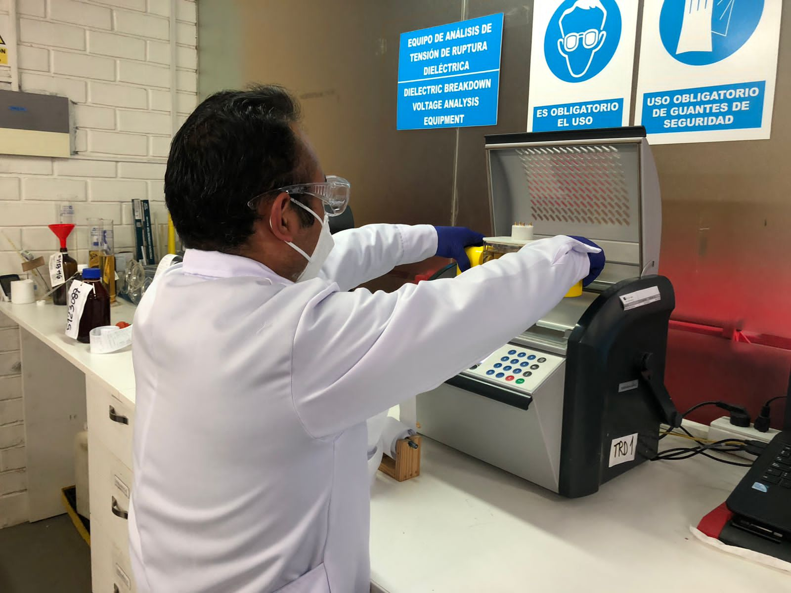

Los líquidos aislantes se utilizan
para aislar y refrigerar el equipo
eléctrico. Las pruebas de calidad
del aceite son la mejor manera de
evaluar el estado del líquido
aislante, con el resultado de este
analisis se va determinar si es
necesario realizar un tratamiento
para mejorar las propiedades del
aceite.
Parámetros del analisis fisicoquímico estándar
| Parámetro | Norma |
|---|---|
| Contenido de Agua/Humedad |
NormaASTM D1533: La presencia de humedad representa una de las causas más comunes de propiedades dieléctricas desfavorables en los líquidos aislantes. El agua se reporta en unidades de partes por millón (mg / kg). El análisis se realiza usando una titulación coulométrica (Karl Fisher). El agua también aumenta el envejecimiento del papel. |
| Tensión Interfacial |
NormaASTM D971: La tensión interfacial es una medida de las fuerzas de atracción entre las moléculas de los dos líquidos. Se expresa en mili-Newton por metro (mN/m). La prueba es un medio excelente de detección de contaminantes polares solubles en aceite y productos de oxidación en aceites minerales. |
| Índice de Neutralización o de acidez |
NormaASTM D974: En el aceite nuevo, es probable que cualquier ácido presente sea un residuo del proceso de refinación del petróleo. En un líquido envejecido en servicio, el número de neutralización es una medida de los subproductos ácidos de la oxidación del aceite. El número de neutralización se puede utilizar como una guía general para determinar cuándo se debe reprocesar o reemplazar el aceite. |
| Color |
NormaASTM D1500: Cualquier cambio en el color del aceite con el tiempo es una indicación de oxidación, deterioro o contaminación del aceite. |
| Apecto Visual |
NormaASTM D1524: Esta prueba indica el color y grado de turbidez del aceite mineral, lo que puede indicar la presencia de agua libre o partículas sólidas contaminantes. La fuente de contaminantes sólidos insolubles puede determinarse filtrando las partículas y examinándolas. Esta prueba puede usarse para sugerir la necesidad de pruebas de laboratorio adicionales, ya que puede permitir determinar si la muestra debe enviarse a un laboratorio central para una evaluación completa. |
| Factor de Potencia a 100C |
NormaASTM D924: El factor de disipación es una medida de la potencia perdida cuando un líquido aislante eléctrico se somete a un campo de corriente alterna. La energía se disipa como calor dentro del líquido. Un factor de disipación de bajo valor significa que el líquido hará que se pierda una pequeña parte de la potencia aplicada. La prueba se utiliza para comprobar el deterioro y la contaminación del aceite aislante debido a su sensibilidad a los contaminantes iónicos. |
| Gravedad específica |
NormaASTM D1298: La densidad relativa del aceite mineral es la relación de los pesos de volúmenes iguales de aceite y agua, probados a 15 °C. La densidad relativa es importante para determinar la idoneidad para su uso en ciertas aplicaciones. Cuando se considera junto con otras propiedades del aceite, la densidad relativa puede ser un indicador de la calidad del aceite. Con una gravedad específica muy alta y a temperaturas muy bajas, se pueden formar cristales de hielo dentro del transformador. |
| Tensión de ruptura dieléctrica |
NormaASTM D1816: El voltaje de ruptura dieléctrica del líquido aislante es una medida de su capacidad para soportar el estrés del voltaje sin fallar. Es el voltaje al que se produce la ruptura entre dos electrodos en las condiciones de prueba prescritas. La prueba sirve principalmente para indicar la presencia de contaminantes conductores de electricidad en el líquido, como agua, suciedad, fibras celulósicas húmedas o partículas. Sin embargo, un alto voltaje de ruptura dieléctrica no indica la ausencia de todos los contaminantes. |

Parámetros del adicionales del analisis fisicoquimico
| Parámetro | Norma |
|---|---|
| Factor de Potencia a 25C |
NormaASTM D924: El factor de disipación es una medida de la potencia perdida cuando un líquido aislante eléctrico se somete a un campo de corriente alterna. La energía se disipa como calor dentro del líquido. Un factor de disipación de bajo valor significa que el líquido hará que se pierda una pequeña parte de la potencia aplicada. La prueba se utiliza para comprobar el deterioro y la contaminación del aceite aislante debido a su sensibilidad a los contaminantes iónicos. |
| Punto de fluidez |
NormaASTM D97: El punto de fluidez es la temperatura a la cual el líquido aislante deja de fluir bajo las condiciones de prueba prescritas. El punto de fluidez tiene poca importancia como prueba de contaminación o deterioro del líquido aislante. Puede ser útil para la identificación del aceite y la determinación de la idoneidad para un clima particular. |
| Inhibidor de Oxidación |
NormaASTM D2668: Dos inhibidores de oxidación sintéticos se usan comúnmente en líquidos dieléctricos. Son 2-6 diterciario-butilfenol (DBP) y 2-6 diterciario-butilpara-cresol (DBPC). Su uso proporciona mayor resistencia a la oxidación en sistemas que están parcial o totalmente expuestos al aire. La eficacia del inhibidor de oxidación depende en gran medida del tipo de crudo del que procede el aceite mineral aislante. Ciertos aceites minerales nuevos pueden contener sustancias antioxidantes naturales que pueden producir una indicación falsa positiva en esta prueba. |
| Tensión de ruptura dieléctrica |
NormaASTM D877: El voltaje de ruptura dieléctrica del líquido aislante es una medida de su capacidad para soportar el estrés del voltaje sin fallar. Es el voltaje al que se produce la ruptura entre dos electrodos en las condiciones de prueba prescritas. La prueba sirve principalmente para indicar la presencia de contaminantes conductores de electricidad en el líquido, como agua, suciedad, fibras celulósicas húmedas o partículas. Sin embargo, un alto voltaje de ruptura dieléctrica no indica la ausencia de todos los contaminantes. |
| Resistividad |
NormaASTM D1169: La resistividad de un líquido es una medida de sus propiedades de aislamiento eléctrico en condiciones comparables a las de la prueba. La alta resistividad refleja un bajo contenido de iones libres y partículas formadoras de iones, y normalmente indica una baja concentración de contaminantes conductores. |
| Punto de anilina |
NormaASTM D611: El punto de anilina (temperatura) del aceite mineral indica la solvencia del aceite para algunos materiales que están en contacto con el aceite. Un punto de anilina alto indica un menor grado de aromaticidad y una menor solvencia para algún material (p. ej., caucho). |
| Estabilidad a la oxidación |
NormaASTM D2112: Este método de prueba es una prueba rápida para evaluar la estabilidad a la oxidación de un aceite mineral nuevo que contiene el inhibidor de oxidación sintético 2-6 DBPC o 2-6 DBP. La prueba mide el tiempo requerido para que la muestra de aceite reaccione con un volumen dado de oxígeno cuando una muestra de aceite se calienta y oxida bajo las condiciones de la prueba. |
| Viscosidad |
NormaASTM D445: La viscosidad del líquido aislante se mide cronometrando el flujo de un volumen conocido de líquido aislante a través de un tubo calibrado a una temperatura específica. La viscosidad tiene una influencia importante en las características de transferencia de calor del aceite. La alta viscosidad disminuye la eficiencia de enfriamiento del aceite. La alta viscosidad también afectará el movimiento de las piezas de los equipos eléctricos, como interruptores automáticos, conmutadores, cambiadores de tomas, bombas y reguladores. La viscosidad es un actor en la determinación de las condiciones para el procesamiento del aceite y el tiempo de impregnación de la celulosa. |
| Punto de Inflamación |
NormaASTM D92: El punto de inflamación del aceite mineral es la temperatura a la que debe calentarse (bajo las condiciones prescritas de la prueba) para emitir suficiente vapor para formar una mezcla inflamable con el aire. El punto de inflamación es la temperatura que proporciona suficientes vapores combustibles para mantener un incendio durante 5 s (en las mismas condiciones de ensayo). Un punto de inflamación bajo puede indicar la presencia de contaminantes combustibles volátiles en el aceite mineral. |
| Otros | - |

Las fallas eléctricas o térmicas, también pueden degradar el aceite mineral para formar una variedad de
productos gaseosos solubles de bajo peso molecular. La composición cualitativa de la mezcla de gases de
descomposición depende del tipo de falla; La cantidad de gases generados depende de la intensidad y
duración del fallo. La Interpretación de los resultados del análisis de gases disueltos (DGA), distingue
los procesos de falla tales como descargas parciales, sobrecalentamiento (pirólisis) y arco. DGA ha
demostrado ser una herramienta de diagnóstico eficaz para una gran variedad de equipos, tales como
transformadores de potencia, reactores, cambiadores de tomas bajo carga, transformadores de distribución,
cables llenos de aceite y disyuntores de aceite.
Fallas que se detectan con el análisis de gases disueltos
 |
 |
|
|---|---|---|
| Descargas Parciales | Calentamiento | Arcos Eléctricos |
| Descargas parciales (PD), es una falla eléctrica de baja energía, es el resultado de la ionización del fluido aislante que rodea la falla. Típicamente los niveles crecientes de hidrógeno con bajos niveles de metano sin aumentos simultáneos de otros gases de hidrocarburos identifican corona. | El sobrecalentamiento del aceite en un transformador puede resultar de una variedad de causas, tales como sobrecarga, corrientes de circulación, conexión a tierra incorrecta y malas conexiones. El sobrecalentamiento se caracteriza por la presencia de hidrógeno, junto con metano, etano y etileno. Los defectos de sobrecalentamiento se clasifican a menudo según su temperatura, desde baja (Menos de 300 ° C, T1) hasta alta (por encima de 700 ° C, T3). | Arco eléctrico (descargas de alta energía), el proceso de avería más severo, implica alta corriente y altas temperaturas. El arco eléctrico puede ocurrir antes de fallos de cortocircuito. El arco eléctrico se caracteriza por la presencia de acetileno. Otros gases de hidrocarburos e hidrógeno se generarán con acetileno debido a temperaturas más bajas que rodean el arco. |
Los compuestos furánicos se generan por la degradación de materiales celulósicos utilizados en los sistemas de aislamiento sólido de equipos eléctricos. Los compuestos furánicos que son solubles en aceite en un grado apreciable migrarán al líquido aislante. La presencia de altas concentraciones de compuestos furánicos es significativa ya que esto puede ser una indicación de degradación de la celulosa por envejecimiento o condiciones de falla incipientes.
La presencia de azufre y otros compuestos corrosivos en los líquidos aislantes puede conducir a la corrosión de las superficies metálicas dentro del equipo eléctrico. Los compuestos corrosivos pueden detectarse observando el efecto del líquido sobre superficies de cobre bajo las condiciones controladas de temperatura y tiempo.
Proceso de la reacción del azufre corrosivo con el cobre

El analisis del conteo de particulas es importante en el analisis de aceite debido al efecto de las partículas sobre la rigidez dieléctrica del aceite aislante disminuyendo su capacidad dieléctrica. A lo largo de los años, varias fallas de transformadores en el campo y en la fábrica se han atribuido a las partículas. Estos allasgos ha llevado a un riguroso procedimiento de filtrado en la fábrica.
Los bifenilos policlorados (PCB) son productos químicos orgánicos producidos a escala industrial desde 1930, y debido a sus propiedades físico-químicas fueron ampliamente usados durante décadas.
Los PCB son difícilmente inflamables, poseen excelentes propiedades dieléctricas y alta persistencia química. Es esta persistencia lo que hace a este compuesto altamente peligroso, ya que permanece inalterable durante periodos prolongados al entrar en contacto con el ambiente.
Frente a esta problemática, el estado peruano cuenta con un plan de identificación de los transformadores que tengan PCB, para contribuir con la gestión ambientalmente de PCB y sus desechos, y la disminución de la contaminación por este contaminante para proteger la salud humana y el ambiente.
| Parámetro | Norma |
|---|---|
| Analisis de PCB cuanitativo | ASTM D4059 |
| Analisis de PCB cualitativo | EPA 9079 |
La forma más accesible y eficiente de determinar la condición del transformador es usar el fluido como medio de diagnóstico. Se ha estimado que los fluidos de transformadores contienen alrededor del 70% de la información de diagnóstico disponible para transformadores. El desafío es acceder a él y usarlo de manera efectiva. Los programas tradicionales de prueba de aceite de transformador utilizan solo unos pocos parámetros de diagnóstico, lo que deja sin usar una gran cantidad de información importante basada en el aceite. Las encuestas de transformadores fallados han revelado que muchas fallas pueden atribuirse a problemas que podrían haberse manejado correctamente con un análisis más detallado del fluido aislante.
Para satisfacer la demanda de una herramienta de gestión de transformadores mejorada, TJIH2b Analytical Services ha desarrollado Evaluación de la condición del transformador, TCA®. TCA® ofrece una evaluación integral del estado dieléctrico y mecánico del transformador a través del análisis del fluido aislante del transformador. La selección de pruebas de TCA® incluye aplicaciones del campo de la microscopía, lo que brinda una mejor comprensión de los problemas y riesgos asociados con la operación continua del transformador.
El TCA involucra los siguientes analisis
Fisicoquímico, parámetros estándar
Analisis de gases disueltos
Inhibidor de oxidación
Conteo de partículas
Analisis de furanos
Algoritmo matemático
DGA se ha aplicado con éxito durante muchos años a equipos de energía llenos de aceite de conmutación sin corriente. La aplicación del análisis de gas disuelto para cargar cambiadores de tomas (LTC) tiene similitudes y diferencias con el uso de DGA en otros equipos de energía llenos de aceite. Es similar en que los mismos procesos producen los mismos gases. Sin embargo, en términos de producción de gas, los LTC son mucho más complejos que los transformadores. Los LTC pueden o no producir todos los llamados "gases defectuosos" en funcionamiento normal y los gases que se producen pueden o no perderse a través de la ventilación.
Las primeras aplicaciones de DGA para evaluar la condición del cambiador de tomas en carga se basaron en experiencias con transformadores. Se desarrollaron límites de umbral para los gases producidos por sobrecalentamiento tanto individualmente como en combinación. Muchos factores como el diseño, las operaciones, la ventilación y la filtración en línea afectan los niveles de gas. En consecuencia, este enfoque de umbral de gas ofreció un éxito limitado, pero demostró la utilidad potencial de las pruebas de fluidos para la evaluación de la condición de LTC. Dado que los datos de gas por sí solos no pueden proporcionar suficiente información para evaluar completamente la condición de LTC, se requirieron nuevos enfoques para las evaluaciones de LTC. La búsqueda de este nuevo enfoque condujo al desarrollo de Tap Changer Activity Signature Analysis o TASA®, que proporciona una evaluación del estado de los componentes de la ruta de carga.
Además de proporcionar información útil para el mantenimiento del fluido aislante, las pruebas de evaluación de fluidos se utilizan junto con los datos de gas LTC para proporcionar información de diagnóstico sobre el estado de los cambiadores de tomas de carga. Mantener el aceite libre de agua, productos de descomposición del arco y otros contaminantes es esencial para el correcto funcionamiento del cambiador de tomas en carga. El perfilado de partículas proporciona información importante sobre el deterioro de los materiales que dan como resultado la producción de partículas. Esto incluye información sobre los procesos en servicio, como la degradación de fluidos, el deterioro de los contactos y el desgaste mecánico de las piezas móviles y la formación de óxido. Dos de los procesos de degradación de fluidos más importantes a evaluar son la carbonización del petróleo y la formación de coque.
El TASA involucra los siguientes analisis
Fisicoquímico, parámetros estándar
Analisis de gases disueltos
Conteo de partículas
Algoritmo matemático
| Parámetro | Norma |
|---|---|
| Pasivador | IEC 60666 |
| DBDS | IEC 62697 |
| Microscopia optica |